Tokyo卍Revengers 「東京卍リベンジャーズ, Tōkyō Manji Ribenjāzu」 es un manga shōnen escrito e ilustrado por Ken Wakui y publicado por Kodansha. El anime está dirigido por Koichi Hatsumi en LIDENFILMS; la emisión comenzó el 11 de abril de 2021 y finalizó el 19 de septiembre del 2021. También cuenta con dos películas life action. La trama sigue a Takemichi, un hombre que regresa en el tiempo a su juventud para evitar que su exnovia y amigos sean asesinados por una banda de delincuentes. Es una mezcla de acción, drama y viajes en el tiempo, donde Takemichi se infiltra en bandas juveniles para cambiar el destino de sus seres queridos.
Takemichi Hanagaki. Nacimiento: 25 de junio, 1991. Edad: pasado: 14; presente: 26; arco final: 16. Signo: Cáncer. Género: Masculino. Altura: 165 cm. Peso: 55 kg. Tipo de sangre: A. Es un hombre algo tímido e infantil aún cuando mentalmente es un adulto, aunque él a veces puede verse como un cobarde y suele demostrar miedo a cierto tipo de situaciones, siempre está dispuesto a luchar por sus seres queridos y no le importa si es golpeado brutalmente, apuñalado o disparado, en todo momento levantará para enfrentar a sus enemigos.
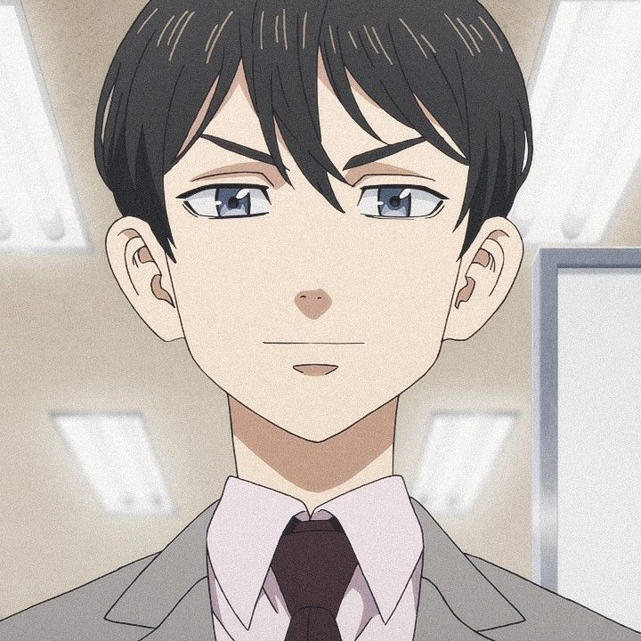Naoto Tachibana. Nacimiento: 12 de Abril, 1992. Edad: pasado: 13; presente: 25. Signo: Aries. Género: masculino. Altura: pasado: 148 cm; presente: 175 cm. Peso:Pasado: 39 kg; presente: 61 kg. Tipo de sangre: A. En la actualidad, Naoto es una persona íntegra con un gran sentido de la justicia, y está decidido a cooperar en la salvación de su hermana. También es muy sensato y sencillo. Naoto a sido un chico tranquilo y maduro desde su niñez. No suele darle gracia el humor de los demás y no parece muy interesado en los chistes, sin embargo, posee un sentido del humor seco de vez en cuando, durante uno de los viajes de Takemichi de regreso al presente, expresa sorpresa de que el pudo evitar que Hinata muriera al ser una "completa basura".
Hinata Tachibana. Nacimiento: 21 de Mayo, 1991. Edad: pasado: 14; futuro: 26-27; arco Final: 16. Signo: géminis. Género: femenino. Altura: 153cm. Peso: secreto. Tipo de sangre: A. Hinata es una chica muy alegre, amable con los demás y positiva. Es capaz de alegrar a todos tan solo con su presencia, ya que es una persona que irradia buenas vibras donde quiera que vaya, esto le permite poder hacer amigos con mucha facilidad. Ella también es muy comprensiva con todo el mundo y está dispuesta ayudar a quien se lo pida.
Manjiro Sano. Apodo: Mikey. Nacimiento: 20 agosto, 1990. Edad: pasado: 15; futuro: 27; arco final: 17; primera línea del tiempo: 11. Signo: Leo. Género: masculino. Altura: 162cm. Peso: 56kg. Tipo de sangre: B. Mikey suele ser un adolescente despreocupado al que le encanta bromear y gastar bromas a sus amigos más cercanos. Se preocupa mucho por ellos y está decidido a proteger su honor. Rara vez muestra algún signo de debilidad, ya que se cree que es la base y el apoyo de ToMan, y si el pilar mismo mostrara debilidad, esta también se debilitaría. En su posición como comandante de ToMan, su aura cambia drásticamente, volviéndose imponente y dominante. Si bien los miembros de la pandilla lo respetan, también tienen un cierto grado de temor hacia él y su inmensa destreza. Mikey también está preocupado por ToMan a nivel individual, como se muestra cuando decide reunir a toda la pandilla para buscar venganza por uno de los amigos de su miembro.
Ryuguji Ken. Apodo: Draken. Nacimiento: 10 de mayo, 1990. Edad: pasado 15; futuro: 27; arco final: 18. Signo: tauro. Género: masculino. Altura: pasado 185; futuro 190. Peso: pasado 75kg; futuro 80kg. Tipo de sangre: O. n algunas ocasiones, Draken es de comportamiento un tanto agresivo y salvaje, más no es impulsivo. Le encantan las buenas peleas y encontrarse con oponentes fuertes. Es grosero con los que considera inferiores a él y deja en claro que no le agradan. Siempre piensa las cosas con calma y trata de buscar la mejor opción para solucionar las cosas, siendo el más maduro de los comandantes. Se pone en el lugar de las demás personas y es respetuoso, a veces aguantando los gritos e insultos en silencio. En todo momento sigue su instinto: hacer lo correcto. Sin embargo, hay momentos en que la ira se apodera de él y arremete con rabia.
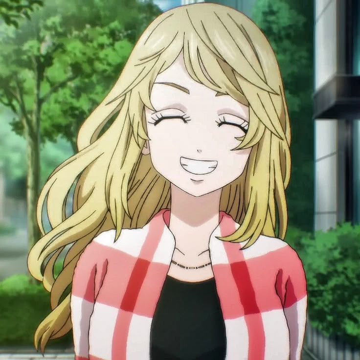Emma Sano. Nacimiento: 25 de noviembre, 1991. Edad; pasado 13-14; futuro 26; primera linea del tiempo 9-10. Signo: sagitario. Género: femenino. Altura: 150cm. Peso: pesa lo de tres manzanas. Tipo de sangre: B. Emma tiene un comportamiento muy infantil cuando está cerca de Draken, el chico que le gusta desde hace mucho tiempo. A menudo coquetea con otros hombres para tratar de ponerlo celoso, pero luego se entristece cuando él no se enfada, ella lo hace con la esperanza de robarle la atención a su hermano. Actúa como si fuera más mayor de lo que en verdad es porque desea crecer más rápido, pero aun así su naturaleza infantil sigue apareciendo. Ella es leal a su hermano y escucha sus órdenes
Keisuke Baji. Apodos: Edward[Ed]. Poindexter(por Chifuyu). Nacimiento: 3 noviembre, 1990. Edad: 14. Signo: escorpio. Género: masculino. Altura: 175cm. Peso: 58kg. Tipo de sangre: AB. Baji en general es alguien salvaje y feroz. Tiende a enojarse con las personas que no están de acuerdo con él o por el simple hecho de estar molesto, como el propio Mikey dijo: "él golpearía a un chico que pase por la calle solo por tener sueño". Le encanta la emoción y la adrenalina de una buena pelea. En combate, siempre mantiene su característica sonrisa. También es alguien muy perceptivo.
Kazutora Hanemiya. Nacimiento: 16 septiembre, 1990: Edad: pasado 15; presente 27. Signo: virgo. Género: masculino. Altura: pasado 174cm; futuro 180cm. Peso: 60kg. Tipo de sangre: AB. Kazutora nunca ha tenido una vida fácil; en su infancia su padre lo golpeaba "a modo de disciplina" y se vio obligado a elegir entre su mamá y su papá a una temprana edad, siendo este un claro caso de violencia intrafamiliar. Como resultado de su familia desestructurada, Kazutora despreciaba ver otras familias felices. Algo tan simple como ver a los otros niños tener momentos tiernos con sus padres, desencadenaba un terrible dolor dentro de Kazutora y lo irritaba profundamente. Sentía un profundo apego hacia los miembros fundadores de ToMan —probablemente debido a que los consideraba una familia—.
Chifuyu Matsuno. Nacimiento: 19 de diciembre, 1991. Edad: pasado 13; futuro 25; arco final 15. Signo: sagitario. Género: masculino. Altura: pasado 168cm; futuro 169cm. Peso: 58kg. Tipo de sangre: O. Chifuyu es una persona muy leal, con un comportamiento tranquilo. Es una persona muy lógica, la cual prefiere pensar con su cerebro en vez de dejarse guiar por lo que dice su corazón, y aunque le gusta mantener sus emociones equilibradas en el fondo es una persona bastante sentimental lo cual dejará brillar sus emociones si la situación lo requiere. No está dispuesto a dejar de lado a sus amigos y se niega a luchar contra aquellas personas que considera que son cercanas a él, ya sea que lo golpeen sus amigos o por el bien de estos, el siempre se quedara junto a ellos.
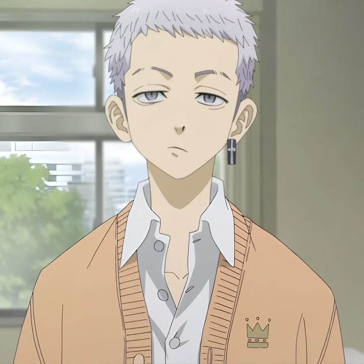Takashi Mitsuya. Nacimiento: 12 de junio, 1990. Edad: pasado 15; futuro 27-28; arco final 18. Signo: géminis. Género: masculino. Altura: 170cm. Peso: 57kg. Tipo de sangre: A. Mitsuya es una persona tranquila y sensata, que a la vez es una fuente de positividad en la pandilla. Es pacifista y prefiere no meterse en conflictos, pero no duda en pelear para defender a sus seres queridos. Ha mostrado su lado furioso con Takemichi cuando estaba perdiendo y tuvo que decirle que se mantuviera enfocado. Mitsuya también es una hermano mayor ejemplar, cuida de sus dos hermanas menores, Mana y Luna, desde temprana edad, actuando como su madre y su padre ya que su madre rara vez está en casa debido al trabajo.
Haruki Hayashida. Apodo: Pah-chin. Nacimiento: 24 de febrero,1991. Edad: pasado 15; futueo 27-28; arco final 17. Signo: piscis. Género: masculino. Altura: 164cm. Peso: 80kg. Tipo de sangre: O. Pah es un tipo rudo, sin miedo a pelear, poco inteligente pero confiado, le es fiel a sus seres queridos y no le importaria perder su vida con tal de ver a las personas que quiere feliz. Suele llevarse muy bien con peh ya que son muy cercanos.
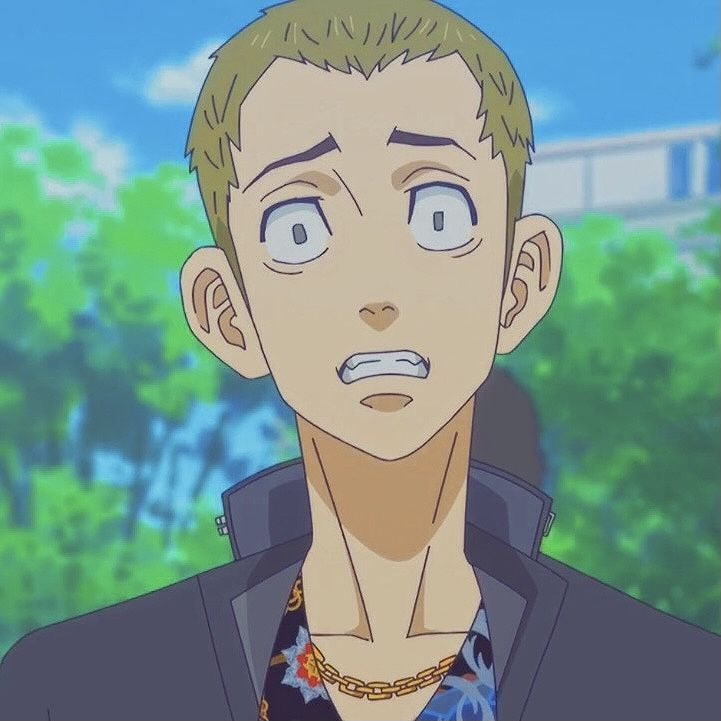Ryohei Hayashi. Apodo: Peh-yan. Nacimiento: 15 de octubre, 1990. Edad: pasado 15; futuro 27; arco final. Signo: libra. Género: masculino. Altura: 176cm. Peso: 56kg. Tipo de sangre: Sin información. Peyan es una persona de mal genio, mayormente se presenta como alguien agresivo y de mal carácter, es poco inteligente y tiene una presencia amenazante la mayor parte del tiempo. Sin embargo, él se preocupa por sus amigos y no duda en defenderlos siempre que sea necesario, esto se puede ver en la pelea entre Pah-Chin y Nobutaka Osanai, Peyan estaba muy preocupado por él y quería interferir con la pelea. También es alguien tímido y que no sabe expresarse frente a algunas personas, aunque su gran sentido del humor lo hace ver como alguien gracioso.
Tetta Kisaki. Nacimiento: 20 de enero, 1992. Edad: pasado 13; futuro25. Signo: acuario. Género: masculino. Altura: pasado 164cm; futuro 180. Peso: 58kg. Tipo de sangre: A. Ingenioso, cauteloso e inhumano son las palabras que más describen a Tetta Kisaki, quien no descansará hasta cumplir sus deseos. Aunque no es un delincuente muy fuerte, su poder para gobernar con miedo hace que incluso aquellos más fuertes que él le obedezcan. La totalidad de sus acciones en toda la historia gira en torno a convertirse en el criminal más poderoso e influyente de Tokio, intentando manipular a Mikey de todas las formas posibles.
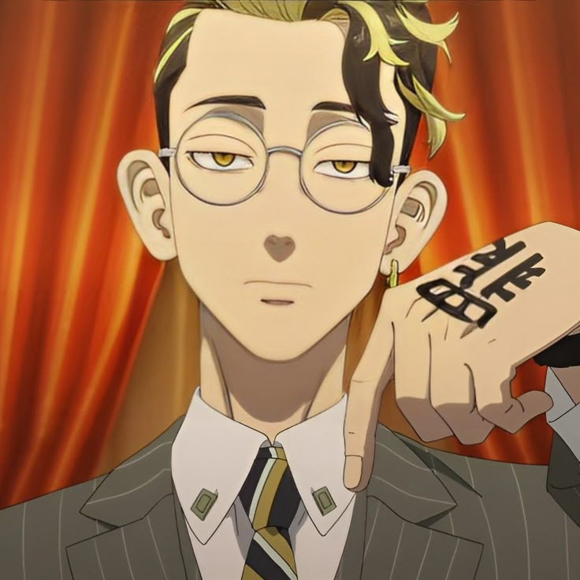Shuji Hanma. Apodos: El dios de la muerte, Zombie y EL segador. Nacimiento: 27 de octubre, 1989. Edad: pasado 16; futuro 28; presente 18. Signo: escorpio. Género: masculino. Altura: 192cm. Peso: 70kg. Tipo de sangre: AB. Hanma en general es alguien molesto y desmotivado, solo encuentra emoción a la hora de pelear y su único propósito en la vida es encontrar adrenalina, por eso suele recurrir a la violencia callejera para aliviar su aburrimiento. Sin embargo, poco a poco se da cuenta de sus capacidades incluso ganando una pelea contra diez personas, hundiéndose otra vez en la desdicha de no poder tener ni una pizca de emoción al pelear. Todo eso pareció terminar cuando conoce a Tetta Kisaki.
Nahoya Kawata. Apodo: Smiley. Nacimiento: 25 de mayo, 1989. Edad: pasado 16; presente 28. Signo: géminis. Género: masculino. Altura: 170cm. Peso: 56kg. Tipo de sangre: A. Es muy difícil saber lo que Nahoya está pensando, ya que siempre mantiene la misma expresión en su rostro. Pase lo que pase, su sonrisa nunca se va, incluso si está enfadado o preocupado. Una cosa es segura y es que Nahoya hará todo lo posible para proteger a su hermano gemelo Souya. A diferencia de su gemelo, a Nahoya le encanta pelear y más aun si es contra un oponente fuerte.
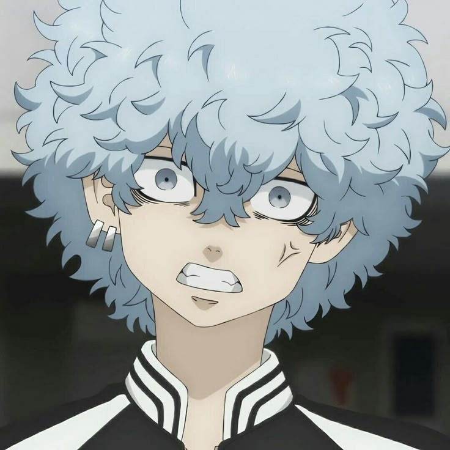Souya Kawata. Apodo: Angry. Nacimiento: 25 de mayo, 1989. Edad: pasado 16; presente 28. Signo: géminis. Género: masculino. Altura: 170cm. Peso: 56kg. Tipo de sangre: A. A pesar de que Souya siempre tiene una expresión enfadada que lo hace ver como un tipo rudo, él en verdad es un chico muy amable y pacifista el cual se preocupa mucho por sus amigos y su hermano gemelo, y quiere protegerlos y apoyarlos a toda costa. Nahoya afirma que Souya es demasiado agradable como para golpear a alguien a no ser que tenga un motivo para ello. Al igual que su gemelo, él es muy leal a Toman.
Haruchiyo Akashi. Apodos: Perro rabioso leal y Haruchiyo Sanzu. Nacimiento: 3 de julio, 1990. Edad: pasado 16; futuro 28; presente 18. Signo: cáncer. Género: masculino. Altura: pasado 172cm; futuro 181cm. Peso: 55kg. Tipo de sangre: AB. Cuando era adolescente, Haruchiyo parecía tener un comportamiento tranquilo y rara vez hablaba. Era extremadamente leal a sus superiores y mucho más amable con aquellos a los que seguía y adoraba. Sin embargo, más tarde se revela que es alguien sumamente manipulador y es excepcionalmente bueno para engañar a otras personas, un ejemplo de esto, es cuando engañó a Muto diciéndole "ser hijo único"; más tarde se revela que tiene un hermano y una hermana. En su juventud, antes de conocer a Yasuhiro Muto, se lo describió como un chico muy problemático el cual no podía ser controlado, lo que dificultaba mucho que otras divisiones de la pandilla lo manejaran, por ello Mikey lo dejó a cargo de Muto, ya que creía que este podría controlarlo.
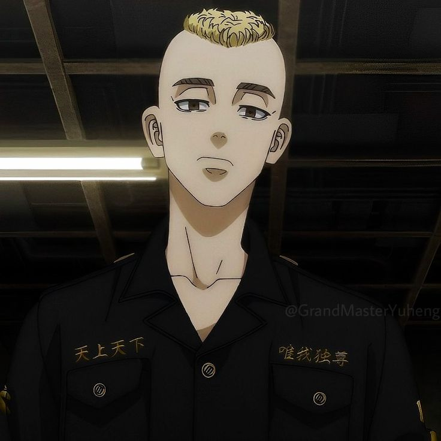Yasuhiro Muto. Apodos: Mucho y El fantasma del S62. Nacimiento: 28 de abril, 1987. Edad: pasado 18; presente 30. Signo: tauro. Género: masculino. Altura: 195cm. Peso: 88kg. Tipo de sangre: Sin información. Mucho era un hombre tranquilo y sereno, un rasgo extremadamente inusual entre los delincuentes. No solía mostrar sus emociones manteniendo su rostro con una expresión neutra la mayoría del tiempo, aún así se pudo apreciar su arrepentimiento por haber traicionado a Toman. Antes de dejar la Tokyo Manji, aparentemente tenía compasión por sus miembros y afirmaba que despreciaba mucho las luchas internas de la pandilla.
Tadaomi Hamada. Nacimiento: 26 de junio, 1990. Edad: 15. Signo: cáncer. Género: masculino. Altura: 192cm. Peso: 86kg. Tipo de sangre: Sin información. Hamada es una persona muy obediente con Kisaki y es un poco arrogante con los demás como miembros provocadores de Tokyo Manji cuando Kisaki fue ascendido a Capitán de la Tercera División.
Kanji Mochizuki. Apodos: Mocchi y Gorila. Nacimiento: 7 de diciembre, 1987. Edad: pasado 18; futuro 30; presente 20. Signo: sagitario. Género: masculino. Altura: 192cm. Peso: 94kg. Tipo de sangre: Sin información. Kanji es brusco y beligerante, siempre dispuesto a unirse a una pelea. Sin embargo, tiene el honor en alta estima, lo que se muestra en su insistencia en que los oponentes peleen uno contra uno y su desprecio por las tácticas de lucha encubiertas. Se emociona cuando se encuentra con un oponente fuerte.
Shinichiro Sano. Nacimiento: 1 de agosto, 1980. Edad: primera línea del tiempo 21; pasado 25; presente 37. Signo: leo. Género: masculino. Altura: 182cm. Peso: 69kg. Tipo de sangre: O. Shinichiro ha sido mencionado varias veces a lo largo de la serie, especialmente por su hermano Mikey. Lo suelen describir como un chico que es "débil con las mujeres, débil en las peleas, pero confiable". Shinichiro era un delincuente notorio con una reputación inigualable que se ganó el respeto de muchos otros delincuentes, tanto dentro de su banda como en las bandas rivales. Aunque era un luchador terrible, su personalidad cariñosa y su capacidad para defender a los demás, junto con su naturaleza humilde, le valieron la lealtad de muchos delincuentes mucho más fuertes que él. Como resultado de este estatus elevado, su tienda de motocicletas se convirtió en un lugar donde los delincuentes podían reunirse libremente, y donde cada visitante mostraba nada más que respeto hacia Shinichiro.
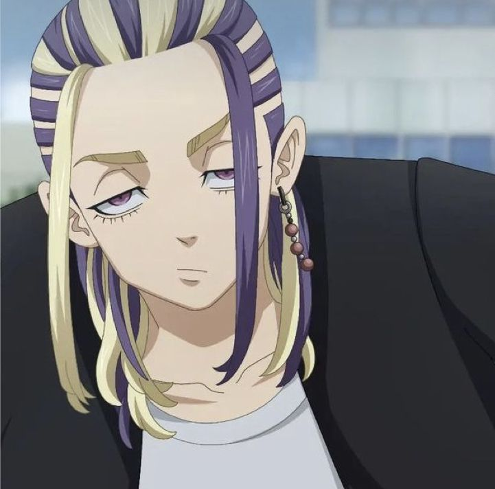Wakasa Imaushi. Apodos: Waka y El leopardo blanco. Nacimiento: 28 de noviembre, 1980. Edad: 27. Signo: sagitario. Género: masculino. Altura: 160cm. Peso: 53kg. Tipo de sangre: A. La mayor parte del tiempo se puede ver a Wakasa con una expresión de aburrimiento y de despreocupación sobre todo lo que le rodea, aparte de esto parece que no le emocionan mucho las peleas. Seguramente su desinterés por pelear se deba a que Wakasa es un tipo fuerte el cual tiene confianza en sus habilidades por lo que no se molesta en pelear con cualquiera.
Keizo Arashi. Apodos: Benkei y Redcliff. Nacimiento: Sin información. Edad: 27. Signo: Incógnito. Género: masculino. Altura: 194cm. Peso: 90kg. Tipo de sangre: incógnito. enkei es una persona seria y sensata, la cual no tiene mucho tiempo para charlas triviales. A pesar de que ahora se ha convertido en un miembro de Brahman su corazón sigue estando con los Black Dragon. Muestra una gran lealtad hacia su antigua pandilla, valorando los ideales de la primera generación por encima de todo lo demás y enfrentándose a cualquiera que él considere que a ensuciado esos ideales. Él cree que sus compañeros deberían tomarse esto tan en serio como él, y con frecuencia les grita cuando descubre que no están a la altura de los ideales de los Black Dragon, esta fuerte amonestación a sus camaradas es una fuente de alivio cómico dentro de la serie.
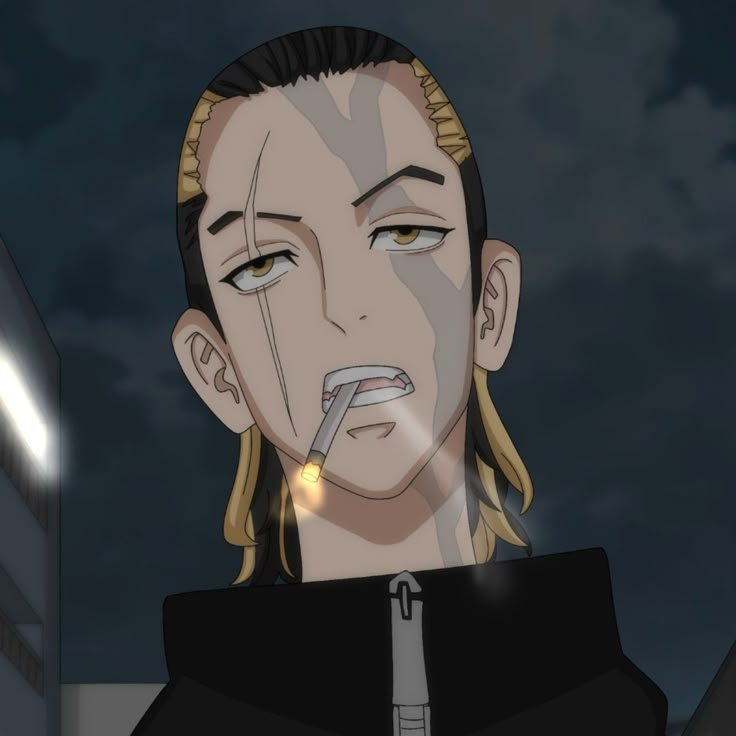Takeomi Akashi. Apodo: Dios de la guerra. Nacimiento: incógnito. Edad: pasado 27; presente 37. Signo: incógnito. Género: masculino. Altura: 181cm. Peso: 70kg. Tipo de sangre: incógnito. Takeomi parece ser una persona seria y callada. Además de ser fumador, en todas sus apariciones hasta ahora llevaba un cigarrillo. Comprende la importancia de la comunicación y no usa ninguna de sus palabras de manera descuidada. No pierde la compostura ante situaciones peligrosas, una de las pocas veces que reacciona de manera violenta es cuando alguien habla mal de de su pandilla o de Shinichiro.
Senju Akashi. Apodos: Senju Kawaragi, La inigualable Senju y La princesa de Brahma. Nacimiento: 10 de septiembre, 1991. Edad: pasado 14; futuro 26; presente 16. Signo: virgo. Género: femenino. Altura: 154cm. Peso: 48kg. Tipo de sangre: A. Senju es una líder de principios con una buena brújula moral. Ella dirige a Brahman a través de sus pérdidas y triunfos y aspira a preservar a la pandilla tal como es, alejándola de la corrupción y la inmoralidad a pesar de ser una de las bandas de delincuentes más infames de Tokio. Sin embargo, sus ideales se ven desafiados en gran medida mientras dirige a su equipo, encontrando ocasionalmente opiniones diferentes de sus subordinados que contrarrestan sus creencias hasta que sucumbe a una disposición inferior e insensible hacia ellos. En su mayoría, pone esta fachada con su hermano mayor Takeomi Akashi, en consecuencia, su asesor, a quien pronunció como tal durante las primeras etapas de formación de Brahman. Takeomi se convirtió en su voz de la razón durante su tiempo de gobierno, ganándose su confianza en su juicio hasta que se sometió al materialismo y la codicia. Insinuó usar el poder y la autoridad de Senju sobre la pandilla para asuntos procesables y, por esta razón, Senju ocultó su verdadero potencial.
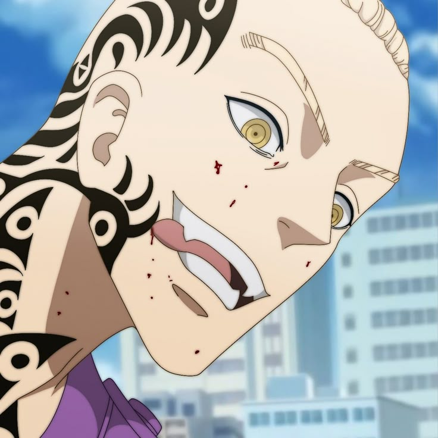Terano Minami. Apodos: El incomparable, El tirano y South. Nacimiento: 3 de marzo, 1988. Edad: pasado 20; presente 29. Signo: piscis. Género: masculino. Altura: 210cm. Peso: 135kg. Tipo de sangre: O. South tenía mucha confianza en sí mismo porque creía en su abrumadora fuerza. Tenía mal genio y tendía a arremeter violentamente contra quienes lo provocaban, sin importar quiénes fueran. Junto con su actitud temperamental, South tenía un comportamiento obstructivo. Se convirtió en un niño descarriado a causa de su pobre y mala crianza en el sector empobrecido de Río de Janeiro, su ciudad natal, lo que provocó que quedara cegado por su personalidad orgullosa.
Ran Haitani. Apodo:"Los hermanos Haitani". Nacimiento: 26 de mayo, 1987. Edad: pasado 18; futuro 30; presente 21. Signo: géminis. Género: masculino. Altura: 183cm. Peso: 70kg. Tipo de sangre: A. Ran a menudo muestra un comportamiento tranquilo pero caprichoso con una sonrisa perezosa en su rostro, a veces puede también llegar a ser bastante bromista. El y su hermano tienden a robar el centro de atención en cualquier negocio en el que estén involucrados. Es un luchador desalmado y muy violento, durante las peleas suele recurrir a tácticas que incluyen el uso de armas, como por ejemplo; lo hemos visto usar su bastón de metal o ladrillos para golpear despiadadamente a su oponente. Tampoco tiene miedo a matar y tiene mucha confianza en sus habilidades para la lucha, tanto es así que llega a ser arrogante diciendo que ni el ni su hermano necesitan un equipo y que ellos solos pueden gobernar Roppongi. Le gusta burlarse de sus oponentes y hablar con falsa simpatía cuando les pide "perdón".
Rindō Haitani. Apodo:"Los hermanos Haitani". Nacimiento: 20 de octubre, 1988. Edad: pasado 17; futuro 29; presente 19. Signo: libra. Género: masculino. Altura: 172cm. Peso: 65kg. Tipo de sangre: B. Rindo posee una naturaleza muy sádica, ya que a menudo se regocija de alegría al escuchar los gritos dolorosos de su oponente mientras le rompen las extremidades. Es despiadado y no muestra piedad a su oponente durante las peleas mientras bloquea sus articulaciones y procede a romperlas continuamente. Rindo también se enorgullece de lo que él y su hermano son capaces de hacer. Muestra una clara aversión por aquellos a quienes les gusta mantener la diversión para ellos mismos durante las peleas. De los dos hermanos, Rindo prefiere mantener una fachada más estoica en comparación con el comportamiento bastante juguetón de su hermano.
Atsushi Sendo. Apodo: Akkun. Nacimiento: 2 de diciembre, 1991. Edad: pasado 13; futuro 25; presente 15. Signo: Género: masculino. Altura: 174cm. Peso: 59kg. Tipo de sangre: O. Atsushi retrata un sentido de gran confianza debido a que es el líder de su pequeño grupo de delincuentes. Como líder del grupo, Atsushi se preocupa por sus amigos. Él sabe que Takuya Yamamoto no es bueno peleando y desea tomar su lugar, para que Takuya no salga lastimado. Estaba listo para matar a Masataka Kiyomizu para salvarse a sí mismo y a sus amigos de la esclavitud, ya que no podía ver otra salida. En el presente, después de que Tetta Kisaki se hiciera cargo de Tokyo Manji y el primer salto en el tiempo, Atsushi se convirtió en administrador en Toman
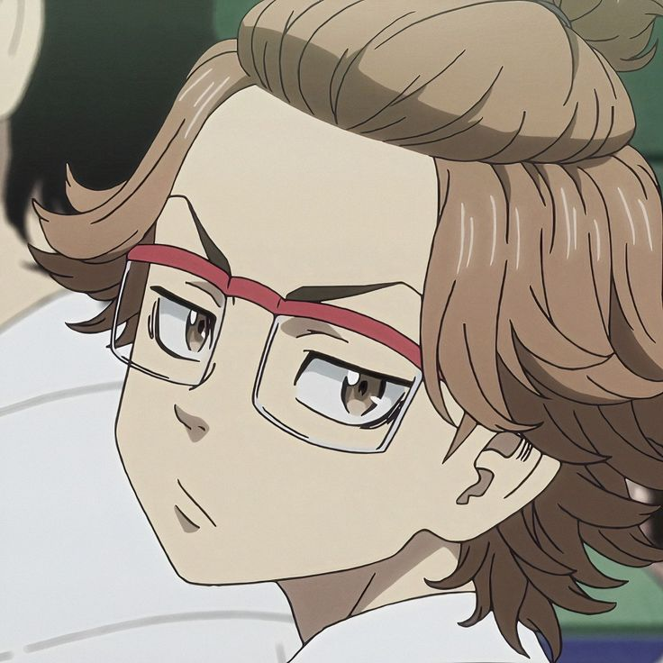Yamagishi Kazushi. Apodo: Enciclopedia con patas. Nacimiento: 9 de febrero, 1992. Edad: pasado 13; futuro 25; presente 15. Signo: acuario. Género: masculino. Altura: 158cm. Peso: 52kg. Tipo de sangre: A. Takemichi lo describe como un idiota que usa gafas porque cree que eso le hará más inteligente. Sin embargo, en realidad es un experto en aprender temas que le interesan, como por ejemplo; las pandillas, su conocimiento sobre estas es amplio y confiable, y gracias a esto ha sido capaz de ayudar a Takemichi en más de una ocasión.
Takuya Yamamoto. Nacimiento: 15 de julio, 1991. Edad: pasado 14; futuro 26; presente 16. Signo: cáncer. Género: masculino. Altura: 166cm. Peso: 55kg. Tipo de sangre: A. Takuya es un adolescente delgado de estatura media, sus ojos son de color ámbar y su cabello es rubio y largo; podría decirse que es similar al de Mikey. Se le puede ver vistiendo el uniforme de Escuela Secundaria Mizo, el mismo que usa Takemichi.
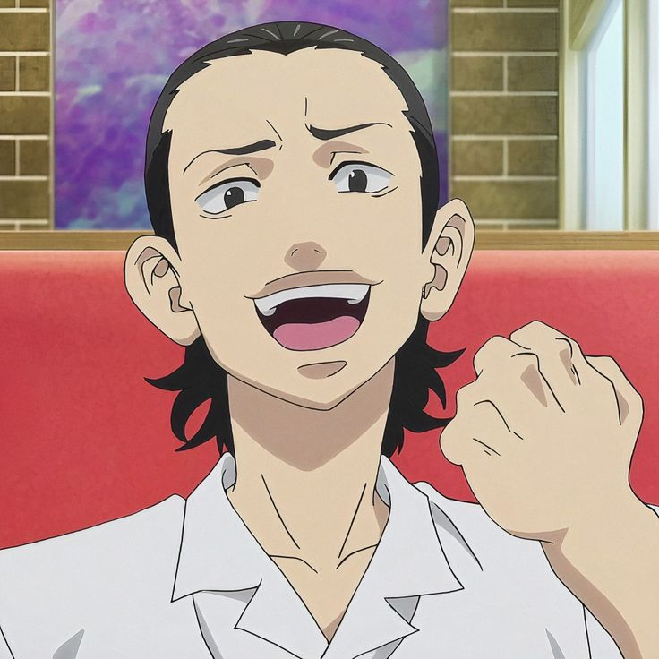Makoto Suzuki. Nacimiento: 28 de diciembre, 1991. Edad: pasado 13; futuro 25; presente 15. Signo: capricornio. Género: masculino. Altura: 172cm. Peso: 64kg. Tipo de sangre: B. Con frecuencia lee libros eróticos y compra DVD del mismo género, y a menudo sueña con ellos. Además de su personalidad juguetona, Makoto es leal a Takemichi y sus amigos de la escuela secundaria, esto de puede apreciar cuando él y el resto de sus amigos se presentaron para ayudar a Takemichi en la pelea de revancha contra Masataka Kiyomizu. También se preocupa por su salud, mostrando preocupación cuando Takemichi fue golpeado y herido por Kiyomasa durante su primer combate.
Masaru. Nacimiento: 18 de mayo, 1990. Edad: 15. Signo: tauro. Género: masculino. Altura: incógnito. Peso: incógnito. Tipo de sangre: incógnito. Masaru es muy cobarde al momento de enfrentar la realidad. Suele ser un mentiroso para así presumir logros de pandillero que él nunca hizo.
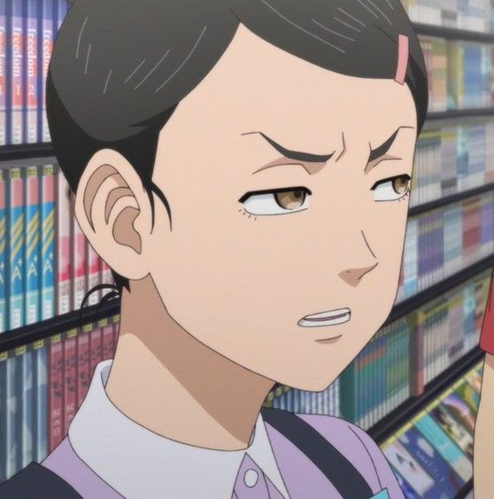Hasegawa. Nacimiento: incógnito. Edad: incógnito. Signo: incógnito. Género: femenino. Altura: incógnito. Peso: incógnito. Tipo de sangre: incógnito. Hasegawa es un personaje secundario que trabaja en una tienda de DVDs. Es la jefa de Takemichi Hanagaki.
Remi. Personaje secundario. Trabaja en el mismo burdel en el que vive Draken. La información sobre este personaje es limitada.
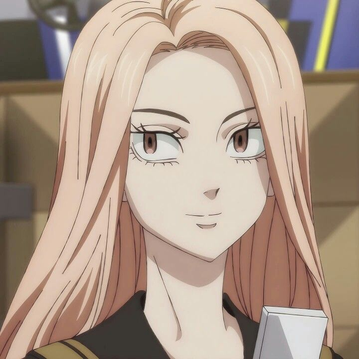Yuzuha Shiba. Nacimiento: 29 de junio, 1990. Edad: pasado 15; futuro 27. Signo: cáncer. Género: femenino. Altura: 168cm. Peso: 49kg. Tipo de sangre: O. Debido a la situación familiar por la que tuvo que pasar Yuzuha se vio obligada a madurar más rápido que otras personas de su edad. Es una chica muy protectora con las personas que aprecia, sobre todo con su hermano menor, Hakkai. Es una chica valiente la cual no tiene miedo de enfrentarse a gente más fuerte que ella aun sabiendo que puede resultar herida si lo hace.
Hakkai Shiba. Nacimiento: 4 de septiembre, 1991. Edad: pasado 14; futuro 26; presente17. Signo: virgo. Género: masculino. Altura: pasado 183cm; futuro 193. Peso: 78kg. Tipo de sangre: O. Hakkai es un chico muy amistoso a pesar de tener una personalidad reservada y tímida. El cambio mucho después de conocer a Mitsuya, ya que antes de conocerse debido a sus problemas familiares y la influencia de su hermano mayor Hakkai pegaba a otros niños, llegando a ser considerado un niño problemático. Fue gracias a su amistad con Mitsuya que Hakkai comprendió que no todos los problemas deben ser solucionados con violencia y que su fuerza deber ser usada para proteger, no para hacer daño a otras personas.
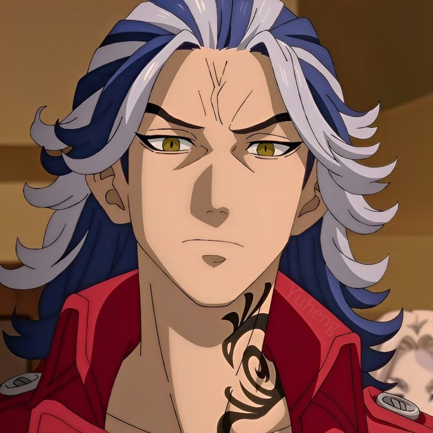Taijū Shiba. Apodo: El protector de la familia Shiba. Nacimiento: 24 de julio, 1989. Edad: pasado 16; futuro28. Signo: leo. Género: masculino. Altura: 195cm. Peso: 97kg. Tipo de sangre: A. Taiju es una persona muy engreída y violenta. En vez de solucionar las cosas de forma pacífica él suele usar la violencia, es el tipo de persona que disfruta atormentando y haciendo sufrir a sus oponentes, importándole poco los sentimientos de los demás. Aunque Taiju en el fondo quiere mucho a sus hermanos y los quiere proteger llego a convertirse en su peor pesadilla llegando incluso a abusar físicamente y psicológicamente de ellos por no saber como manejar las cosas de forma adecuada. Aunque puede que no lo parezca debido a su apariencia física Taiju es un cristiano devoto, el cual va a rezar y tiene como costumbre celebrar siempre la Navidad en la iglesia.
Kokonoi Hajime. Apodo:Koko. Nacimiento: 1 de abril, 1990. Edad: pasado 15; futuro 28; presente 18. Signo: aries. Género: masculino. Altura: 174cm. Peso: 60kg. Tipo de sangre: A. Koko actúa únicamente siguiendo sus intereses, los movimientos que ejecuta en su gran mayoría son para su propio beneficio. Se acerca a personas más poderosas que él con la intención de utilizarlos, pero les dará la espalda si estos no le ofrecen lo que desea. Aunque Koko no sea realmente una persona muy dotada físicamente su inteligencia lo compensa. Tiene excelentes habilidades para hacer dinero, tanto de forma legal como ilegal, obtuvo la gran mayoría de sus conocimientos financieros a través de la lectura de muchos libros y búsquedas en internet. Tiene una gran obsesión con el dinero, llegando a obtener más dinero de el que en verdad necesita, esta inclinación hacia la ganancia monetaria tiene sus raíces en la desesperación.
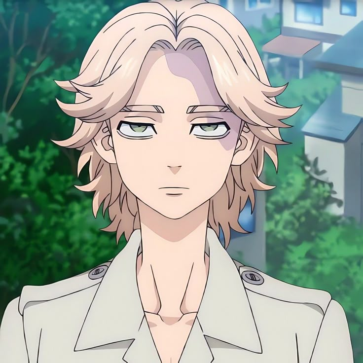Seishu Inui. Apodo: Inupi. Nacimiento: 18 de octubre,1989. Edad: pasado 16; futuro 28; presente 18. Signo: libra. Género: masculino. Altura: pasado 177cm; futuro 182cm. Peso: 64kg. Tipo de sangre: B. Seishu es el tipo de persona con una personalidad tranquila y silenciosa, por lo que no suele hablar mucho y por lo general mantiene una cara inexpresiva. Sin embargo, todos en la pandilla saben de lo que es realmente capaz. Ha demostrado ser muy leal a Black Dragon, dando todo lo que tenia de si para intentar revivir a la pandilla después de que Toman venciera a la novena generación. No tiene miedo de expresar sus pensamientos y opiniones, incluso si al final le duele. Cuando encuentra personas en las que confía, se dedica a ellas en cuerpo y alma. Aunque no suele mostrar su lado vulnerable no le da miedo abrirse aquellas personas en las que confía.
Akane Inui. Nacimiento: incógnito. Edad: 16. Signo: incógnito. Género: femenino. Altura: incógnito. Peso: incógnito. Tipo de sangre: incógnito. Akane es la hermana mayor de Seishu y la chica de la que Koko estaba enamorado.
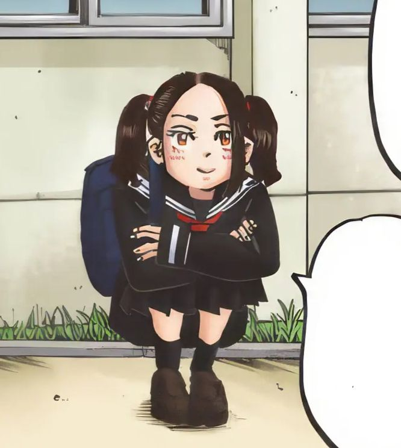Yumi Morita. Apodo:Yumi Mori. Nacimiento: incógnito. Edad: pasado 5; futuro 28; presente 13. Signo: incógnito. Género: femenino. Altura: incógnito. Peso: incógnito. Tipo de sangre: incógnito. Es una reservada y modesta mujer.
Izana Kurokawa. Nacimiento: 30 de agosto, 1987. Edad: pasado 18; presente 30. Signo: virgo. Género: masculino. Altura: 165cm. Peso: 58kg. Tipo de sangre: A. En el momento en el que se separó de Emma cuando eran pequeños él se veía como un niño amable y comprensivo, pero después su personalidad cambió drásticamente volviéndose alguien sumamente despiadado y cruel. Su odio y celos por Mikey crecieron con el paso del tiempo, incluso hasta el punto en el que estuvo dispuesto a matar a Emma, una persona con la cual a pesar de no compartir sangre con ella, se podría decir que eran "familia". Cuando Izana se enteró de la muerte de Shinichiro, seguramente se sintió solo y acabó perdiendo la poca cordura y estabilidad emocional que le quedaba, fue entonces, cuando estaba en el punto más bajo de su vida, cuando conoció a Tetta Kisaki, este último tomo ventaja de la situación mental de Izana para intentar manipularlo, teniendo éxito en su plan y dando paso a la creación de Tenjiku.
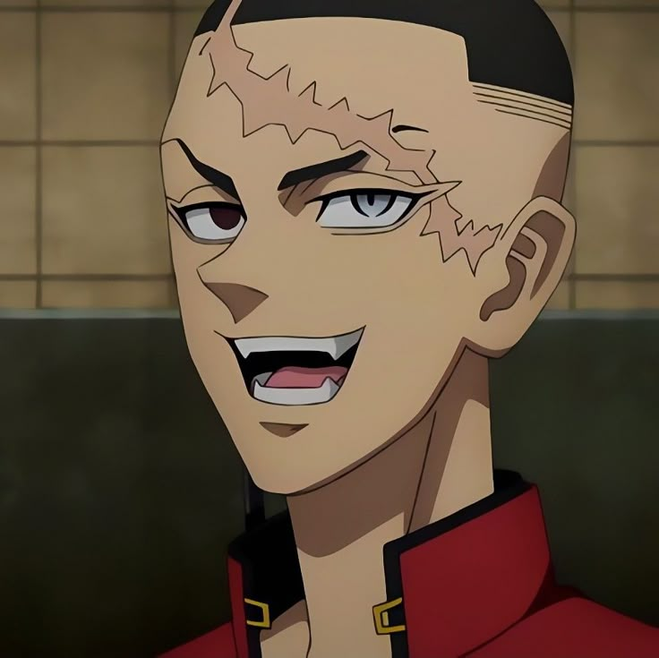Kakucho Hitto. Apodos: Luchador y Kaku-chan. Nacimiento: 29 de agosto, 1989. Edad: pasado 14; futuro 26; presente 16. Signo: leo. Género: masculino. Altura: 179cm. Peso: 63kg. Tipo de sangre: O. Debido a su trágica infancia que lo dejó huérfano, Kakucho es cerrado cuando se trata de confiar en los demás. En la pelea entre la Tokyo Manji y Tenjiku, Kakucho le dice a Takemichi Hanagaki que no dudará en matarlo sin piedad, incluso si era un amigo de la infancia. Esto se debe a su confianza inquebrantable en Izana Kurokawa, su autoproclamado "maestro" desde la infancia, debido a sus duras experiencias mutuas como huérfanos, quienes se conocieron y crecieron como hermanos en soledad en un orfanato. Su lealtad hacia Izana es su impulso para luchar contra los enemigos de Izana o cualquiera que los vea a ambos como oponentes, lo que convierte al propio Kakucho en un sirviente obediente de su rey.
Chonbo Kureiji. Nacimiento: 28 de febrero, 1991. Edad: 14. Signo: piscis. Género: masculino. Altura: 183cm. Peso: 80kg. Tipo de sangre: incógnito. La información sobre este personaje es limitada.
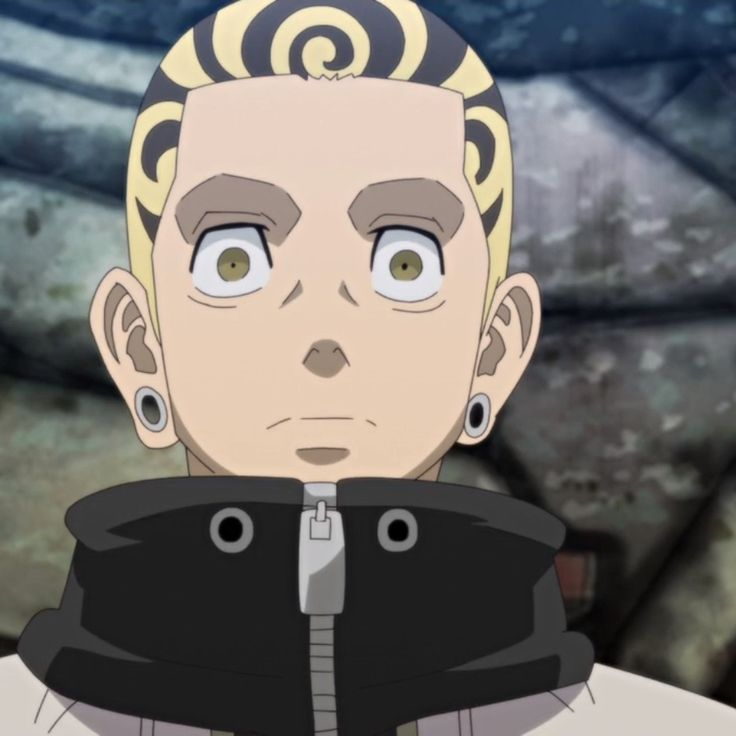Chome Kureiji. Nacimiento: 2 de marzo, 1991. Edad: 14. Signo: piscis. Género: masculino. Altura: 174cm. Peso: 70kg. Tipo de sangre: incógnito. La información sobre este personaje es limitada.
Choji Ahane. Nacimiento: 29 de enero, 1992. Edad: 13. Signo: sagitario. Género: masculino. Altura: 167cm. Peso: 53kg. Tipo de sangre: O. Choji es silencioso y siempre serio acerca de las cosas. Aparentemente es completamente leal a Kisaki, obedeciendo cada una de sus órdenes. También pelea sucio, atacando a un enemigo mientras está herido, como lo que le hizo a Manjiro Sano cuando cayó de rodillas, aunque también fue por orden de Kisaki.
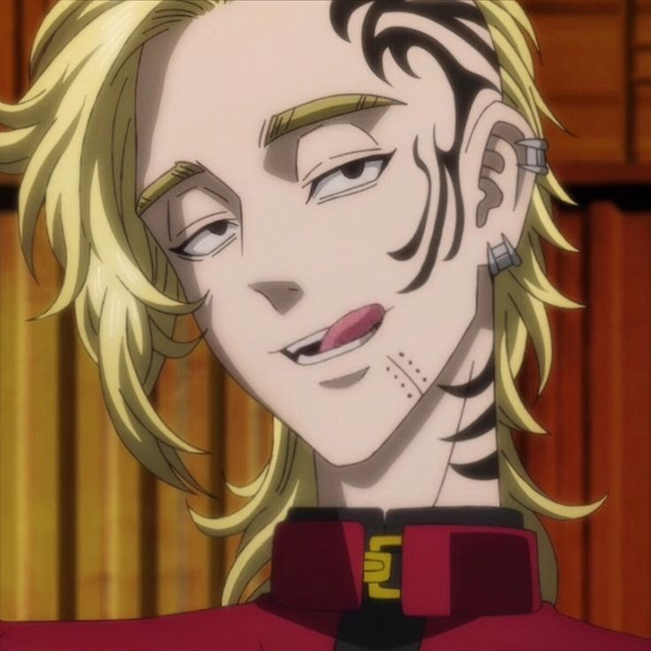Shion Madarame. Apodo: Perro rabioso. Nacimiento: 21 de marzo, 1987. Edad: pasado 18; futuro 30; presente 20. Signo: aries. Género: masculino. Altura: 177cm. Peso: 66kg. Tipo de sangre: AB. Shion es un delincuente cruel y sanguinario. Su brutalidad asusta incluso a los miembros de su pandilla. Su amor por la lucha le valió el apodo de "Mad Dog" dentro de Tenjiku. Se enorgullece de su fuerza y, como resultado, es sumamente arrogante. Su rostro se contrae en una amplia sonrisa cuando está emocionado. Madarame es a la vez grosero y jactancioso, sin nada que mostrar, junto con su falta de respeto o decencia.
Ryusei Satou. Sale en los tomos especiales de Baji y Chifuyu. La información sobre este personaje es limitada.
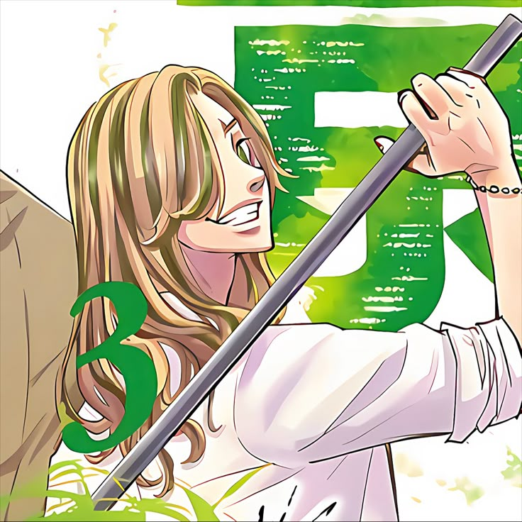Hishi Kojiro. Sale en los tomos especiales de Baji y Chifuyu. La información sobre este personaje es limitada.
Kensho Hishi. Sale en los tomos especiales de Baji y Chifuyu. La información sobre este personaje es limitada.
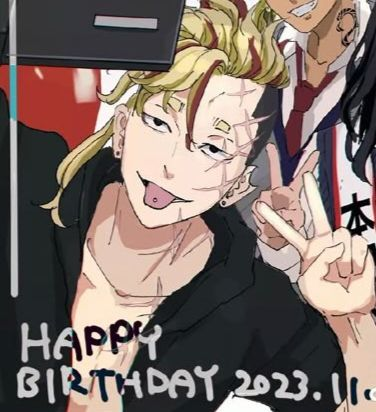Kiyomaro Mori. Sale en los tomos especiales de Baji y Chifuyu. La información sobre este personaje es limitada.
Ayumu Tobishima. Sale en los tomos especiales de Baji y Chifuyu. La información sobre este personaje es limitada.
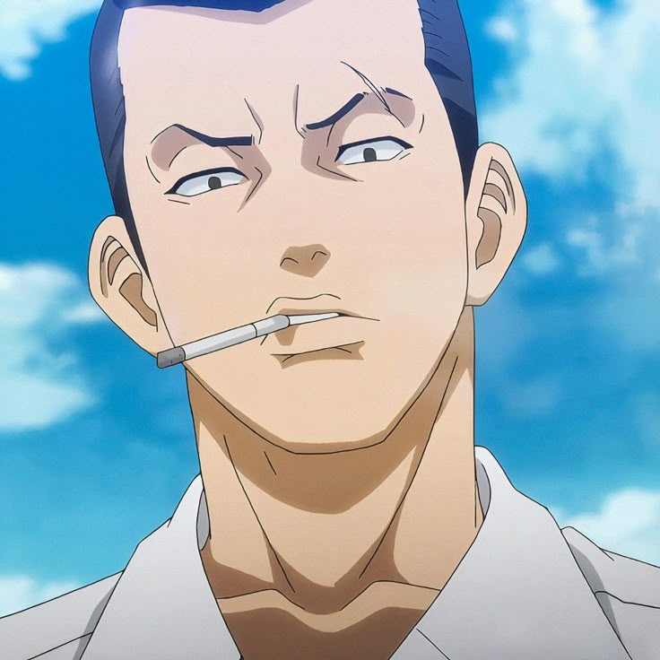Masataka Kiyomizu Apodo: Kiyomasa. Nacimiento: 18 de enero, 1991. Edad: pasado 14; presente 26. Signo: capricornio. Género: masculino. Altura: 182 cm. Peso: 82kg. Tipo de sangre: incógnito. Kiyomasa es alguien muy cruel y despiadado, hostiga a quienes considere que sean inferiores a él, no duda en golpear a personas más débiles con tal de afirmar su dominio y satisfacerse. Cuando algo le molesta o alguien se pone en su contra se vuelve más despiadado incluso, esto se puede ver cuando Takemichi pregunta por Sano. Kiyomasa se molestó tanto por escuchar ese nombre que golpeó a Takemichi con un bate hasta dejarlo inconsciente.
Nobutaka Osanai Nacimiento: 5 de diciembre, 1988. Edad: pasado 17; presente 29. Signo: sagitario. Género: masculino. Altura: pasado 182cm; futuro 185. Peso: 82kg. Tipo de sangre: B. De adolescente, Osanai es brusco y violento. Desprecia a otros delincuentes que no están en su pandilla y tiene mucha confianza en sus habilidades de lucha. También es bastante tonto, y Tetta Kisaki lo manipula fácilmente para cumplir sus órdenes.
Mamá de Ryusei. Sale en los tomos especiales de Baji y Chifuyu. La información sobre este personaje es limitada.
Mamá de Chifuyu. Género: femenino. Sale en los tomos especiales de Baji y Chifuyu. La información sobre este personaje es limitada.
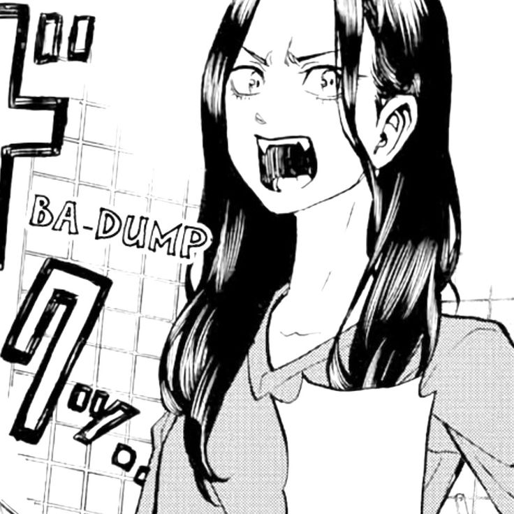Ryoko Baji. Mamá de Keisuke. Género: femenino. Sale en los tomos especiales de Baji y Chifuyu. La información sobre este personaje es limitada.
Sakurako Sano. Mamá de Shinichiro y Manjiro. Género: femenino. Enfermedad o accidente: incógnito. La información sobre este personaje es limitada.
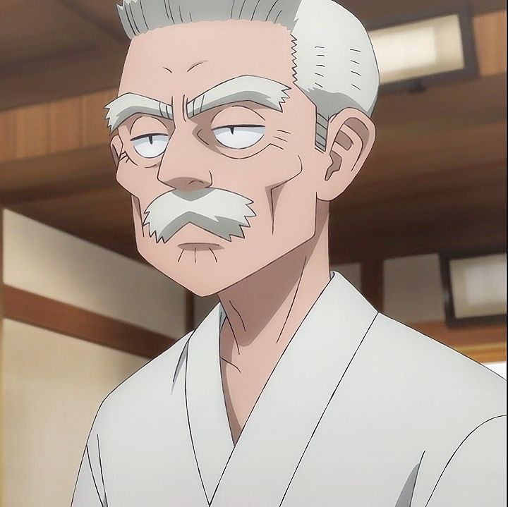Mansaku Sano. Abuelo de la familia Sano. Género: masculino. La información sobre este personaje es limitada.
Makoto Sano. Género: masculino. Padre de Shinichiro, Manjiro y Emma. La información sobre este personaje es limitada.
Karen Kurokawa. Género: femenino. Madre de Emma. La información sobre este personaje es limitada.
Peke J. Apodos: Excalibur (Puesto por su primer dueño, Chifuyu), Ronaldinho. Aunque obedece las órdenes de su dueño, Chifuyu Matsuno, Peke J ha demostrado ser un gato travieso. A pesar de llevar un mes viviendo en la casa de la familia Matsuno, Peke J se escapaba a menudo para visitar a Keisuke Baji, que antes vivía en el quinto piso del edificio de apartamentos de Chifuyu.
Pochi. Género: masculino. Su dueño es Pah-chin. La información sobre este personaje es limitada.
Madre de Hinata y Naoto Tachibana. Género: femenino. La información sobre este personaje es limitada.
Masato Tachibana. Género: masculino. Padre de Hinata y Naoto Tachibana. La información sobre este personaje es limitada.